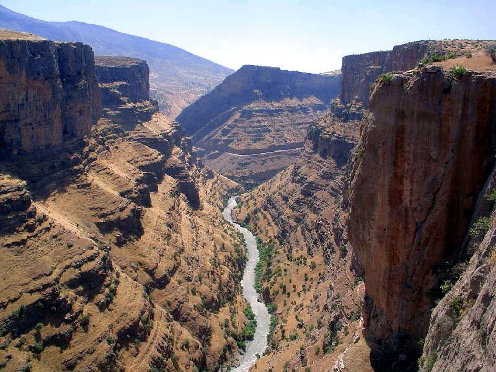

Découvrez Rawanduz
Rawanduz est une belle ville dans les montagnes du Kurdistan irakien. Elle est connue pour ses paysages magnifiques, ses montagnes hautes et sa grande rivière. C'est un endroit parfait pour se reposer et voir la nature.
Rawanduz est entourée de très hautes montagnes. En hiver, elles sont couvertes de neige. En été, elles sont vertes avec beaucoup d'arbres. La rivière Greater Zab traverse la ville. Son eau est claire et fraîche. Elle vient des montagnes et va vers le fleuve Tigre.
L'histoire de Rawanduz
Rawanduz existe depuis longtemps. C'était un endroit important sur les routes commerciales anciennes. Les marchands s'arrêtaient ici pour se reposer.
La ville est située dans une vallée entre les hautes montagnes. C'est un passage naturel entre différentes régions du Kurdistan.
Maintenant, Rawanduz est une destination touristique populaire. Beaucoup de familles kurdes viennent ici pour les vacances, surtout en été quand il fait chaud dans les autres villes.
Que voir à Rawanduz
Le canyon de Rawanduz
C'est un grand canyon très profond avec des roches impressionnantes. La rivière coule au fond. On peut se promener sur les bords et prendre de belles photos.
La cascade de Gali Ali Beg
Une très belle cascade haute de 800 mètres. L'eau tombe de très haut dans un bruit magnifique. C'est l'une des plus hautes cascades du Moyen-Orient.
Le téléphérique
Un téléphérique moderne qui monte sur la montagne. Du haut, on voit toute la vallée et les montagnes autour. C'est très beau et un peu impressionnant.
Les grottes de Shanidar
Des grottes anciennes où des archéologues ont trouvé des restes très vieux. C'est un site important pour l'histoire de l'humanité.
Activités à Rawanduz
- Se promener au bord de la rivière
- Randonnée dans les montagnes
- Visite des villages de montagne
- Pique-nique dans les forêts
- Visite des marchés locaux
- Dégustation de la cuisine kurde
Conseils pour votre visite
Comment aller à Rawanduz
Rawanduz est à 120 kilomètres d'Erbil. Il faut prendre la route qui va vers les montagnes. Le trajet dure environ 2 heures et les paysages sont magnifiques.
Où dormir
Il y a plusieurs types d'hébergement :
- Hôtels modernes avec vue sur les montagnes
- Maisons d'hôtes familiales
- Chalets en bois près de la rivière
- Camps de vacances pour les familles
Conseils pratiques
- Réservez votre hôtel à l'avance en été
- Respectez la nature, ne jetez pas de déchets
- Goûtez la nourriture locale dans les restaurants
- Négociez les prix dans les marchés
- Apprenez quelques mots de kurde, les gens apprécient
Souvenirs à acheter
- Tapis et tissus kurdes
- Miel et confitures de montagne
- Bijoux traditionnels
- Objets en bois sculpté
- Épices et herbes séchées
- Produits de laine locale